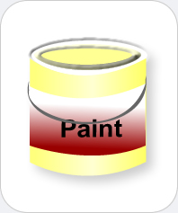

|  |
Wall
Paint
Chemicals you may find: Pigment (Titanium dioxide) Extenders (clay, silica, talc, calcium carbonate) Binders (acrylic, vinyl acrylic) Diluent (water, denatured alcohol, paint thinner) Additives |
| Paint is used on the wall as a pigmented coating to protect and add color to the surface. There are three components to paint: binder, diluent, and additives. The binder is the most essential component because it solidifies to form dry paint on walls. The most common binders include resins, acrylics, polyesters, melamine, oils, or latex. The purpose of the diluent is to adjust the viscosity of the paint. Examples of diluents include water, alcohols, ethers, and glycols. Any other ingredient that is added intentionally or unintentionally is an additive and these include pigments, dyes, emulsifiers, flatteners, texturizers, thickeners, stabilizers, etc. Polymers found in paints are not water-soluble and therefore after paint has dried, it is water resistant. Titanium dioxide - the same white compound you can find in creams, tooth paste, sunscreen and more - is often used in wall paint because it is permanent and has good covering power. Of significance importance is the finish of the paint in the interior walls of a home. Wall paint can produce various finishes such as matte, satin, flat enamel, eggshell, semi-glossy, and glossy. Hence, as mentioned above, the versatility of paint has increased over the past years. | |